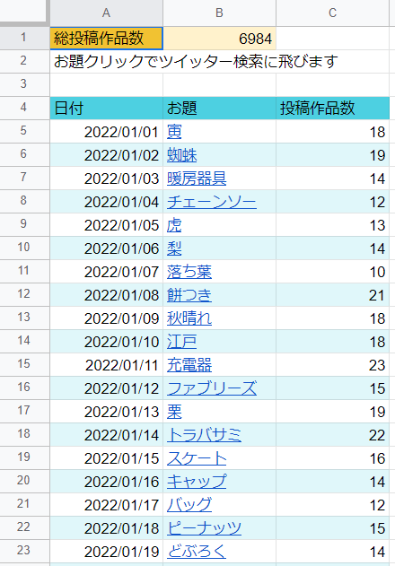

bot開発
GAS (Google Apps Script)、Twitter API、IFTTT を組み合わせて、3Dモデリングのお題出題botを作りました。2019年8月19日から運営を始め、現在1600人ほどフォロワーがいます。後述するお題生成以外は全て自動化しています。
本日のお題は「ビー玉」です。
— 深夜の真剣モデリング60分一本勝負 (@1hourmodelling) February 28, 2022
投稿の際は #深夜のモデリング60分一本勝負 のハッシュタグをつけていただけると幸いです。
ツイートの自動化
GAS のトリガーと Twitter API を使って、毎日以下のツイートを自動でツイートしています。
- 21:50 お題発表ツイート
- 22:00 モデリング開始ツイート
- 23:00 モデリング終了ツイート
作品リツイートの自動化
#深夜のモデリング60分一本勝負 に投稿された作品を30分置きに自動リツイートしています。処理の流れは以下のようになっています。
- IFTTT でツイートの検索
- Googleスプレッドシートに該当ツイートを追加
- 追加されたツイートを Twitter API を使ってリツイート
過去のお題
過去に出題したお題を簡単に確認できるように、毎日のお題を GAS を使ってスプレッドシートに追加しています。また、リツイート数をカウントすることで、投稿作品数の統計も取っています。
お題の生成
お題は募集形式を取っています。お題用スプレッドシートを作成し、全体公開にすることで、誰でも自由に入力出来るようになっています。お題は入力された中からランダムに選ばれるため、お題がツイートされるまでその日のお題は分かりません。
追記
Twitterにおける自動化に関するルールは以下のページに書いてあります。気になる方は読んでみて下さい。